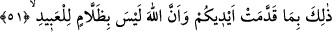
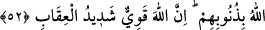

51. İşte bu, ellerinizin yapıp ileri sunduğu işler yüzündendir, yoksa Allah kullara
zulmedici değildir.
“İşte bu,” meleklerin vurması ve olacak olan azab “ellerinizin yapıp ileri sunduğu
işler” yani yapıp ettiğiniz küfür ve isyanlar “yüzündendir.” “__WORD__” yani el, idrak sâhibi
kişiyi temsil eder. En çok iş yapan uzuv dikkate alınarak kişinin yerine eli zikredilmiştir.
“yoksa Allah kullara zulmedici değildir.” Bu cümle, kendinden önceki cümleyi
doğrulayan açıklayıcı ara cümledir. Yani, işin aslı şu ki kulları tarafından bir günah
işlenmeden Allah onlara azab edecek değildir. Ehl-i îmânı cehennemle ve azabıyla
cezalandırmaz. Ancak kendi nefislerine zulmettiklerinden dolayı kâfirleri, münafıkları
ve mürtedleri cezalandırır.
Ehl-i sünnete göre günahları olmasa da onlara azâb etmesi, aşırı bir zulüm olmak bir
yana asla zulüm değildir. Bununla birlikte Allah’ın haksız yere azâb edici olmadığının
belirtilmesinin sırrı, Âl-i İmran sûresinde geçmişti.
Eğer “Zallâm”, yani çok zulmeden kelimesi, mübalağa sıygası olması açısından
“zalim”den daha özeldir. Mübalağa sıygasında o işi çokça yapma anlamı vardır. Bu da
umûmî mânâda hiç zulüm olmadığı anlamına gelmez.” dersen, buna şöyle cevap
veririm: Zulmün çokluğu ile erişeceği fertlere göre çokluğu kastedilir. Çünkü “el-
abîd”, yani kullar kelimesi çokluğa delâlet eder. Onların çok olmasına nazaran
kendilerine erişecek zulüm de çok olmuş olur. Burada onlardan her biri hakkında hiç
zulüm olmadığı belirtilmektedir.
Mânâ şöyledir: “Allah kullarından hiçbirine zulmetmez.” Aynı şekilde zulmün çoğu
olmadığına göre azı da yoktur. Çünkü zâlim ancak zulmünden faydalanmak için
zulmeder. Kendisi hakkında fayda ve zarar görmenin câiz olduğu kimse, faydası fazla
olduğu halde çok zulmü terk ederse, daha az fayda sağlayacak az zulmü zaten terk eder.
Yine “Zallâm” kelimesi, bezzâz (kumaşçı) ve attâr (kokucu) kelimeleri gibi meslek ve
mensûbiyet bildirmek içindir. Yani, her halükârda Allah’a zulüm nisbet edilemez.
52. (Bunlar da) Firavun âilesi ve onlardan evvelkilerin âdeti üzere (davrandılar).
Onlar da Allah’ın âyetlerini inkâr ettiler. Allah da onları günahları sebebiyle
yakaladı. Şüphesiz Allah güçlüdür, cezâsı çetindir.
Bunlar da “Firavun âilesi ve onlardan evvelkilerin” yani Firavun âilesinden önceki
Nuh, Semûd ve Âd kavimleri inkar ve inat ehli olanların “âdeti üzere” davrandılar. Bu